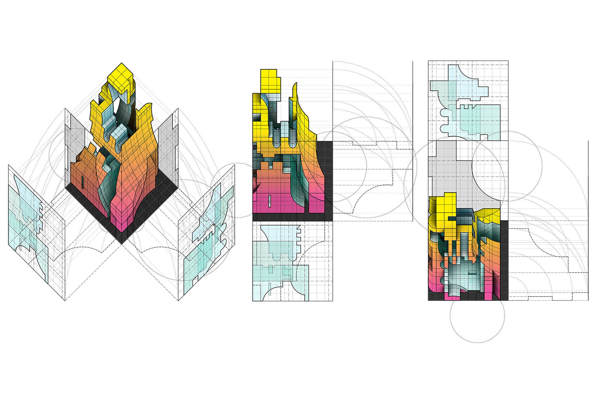
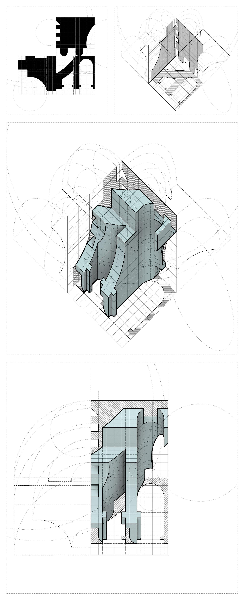
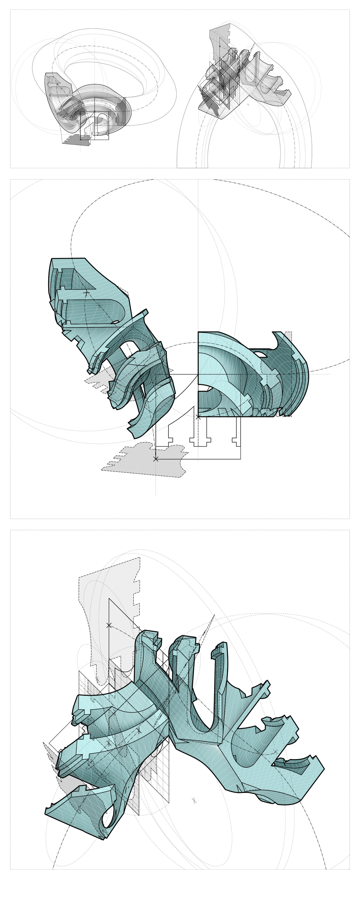
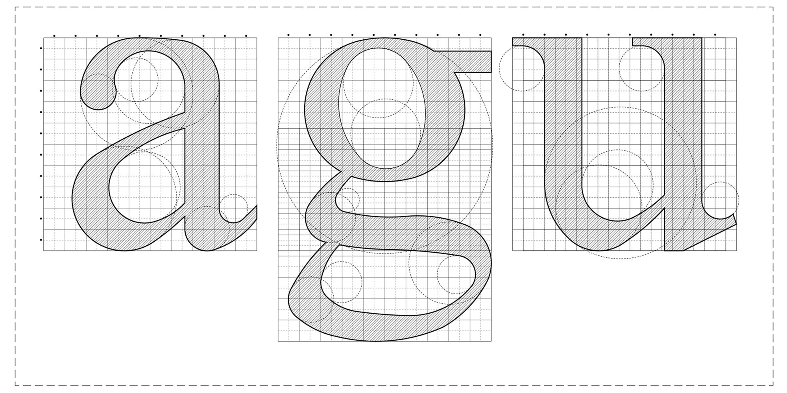
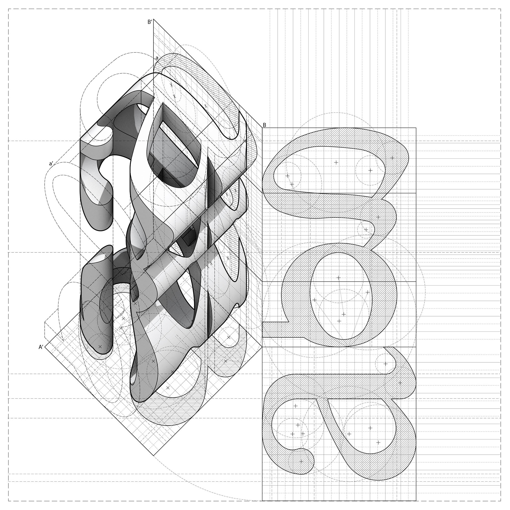
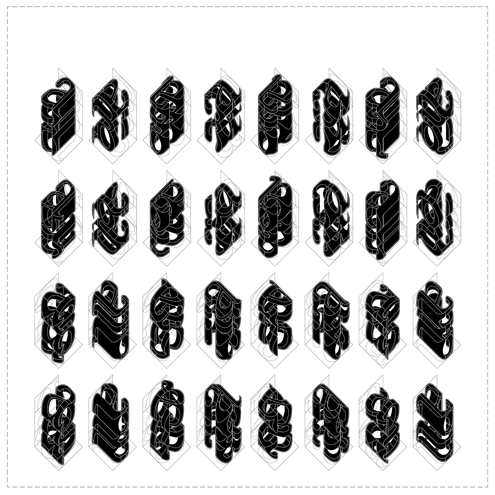
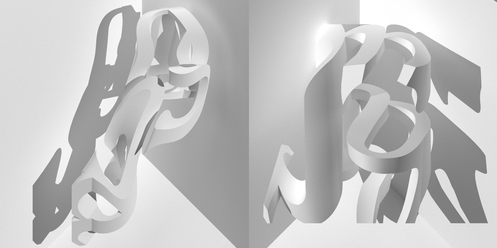
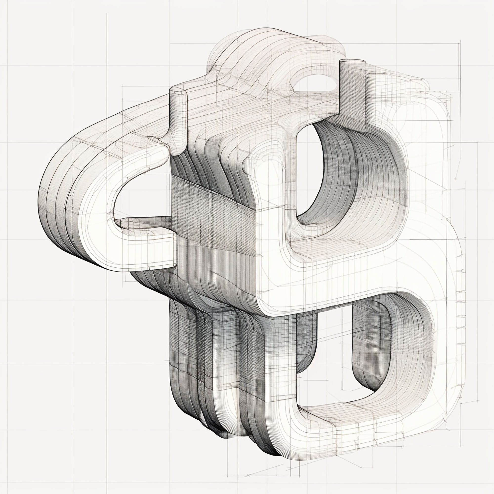
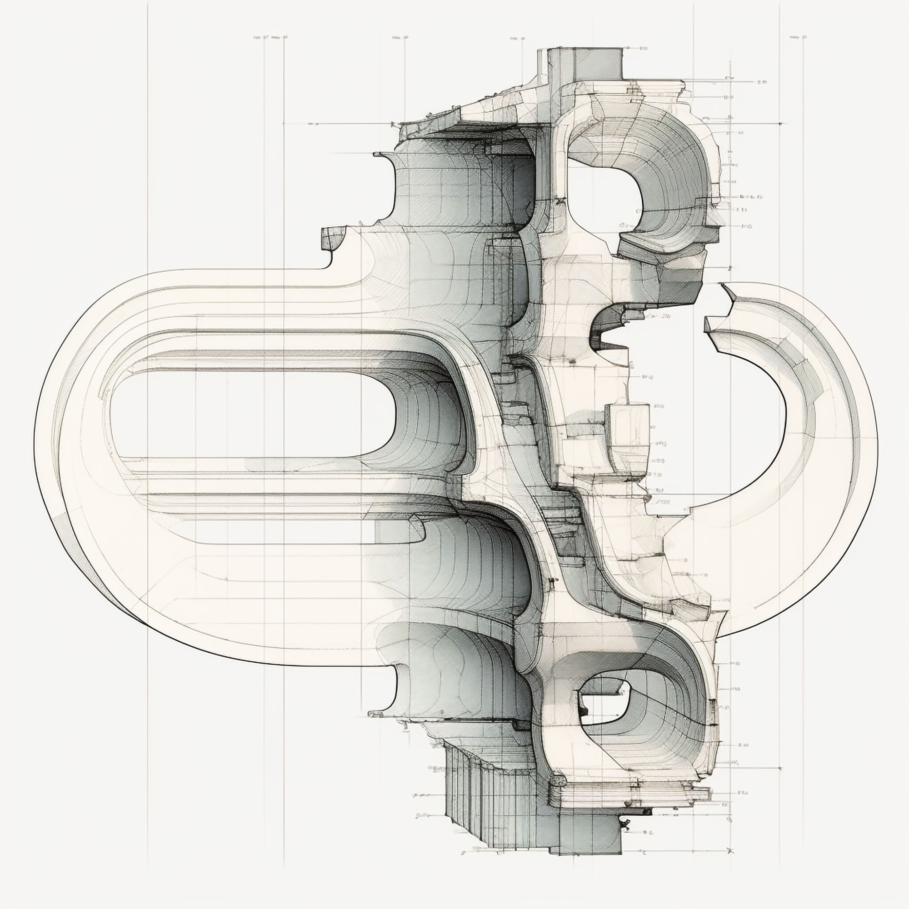

Casting Against Type
Profiles and letterforms swap roles.

This project explores the reciprocity between architecture and typography through orthographic drawing, treating both profiles and characters as marks that straddle abstraction and meaning. Architectural outlines are read as letterforms, while letters are cast as architectural profiles, creating hybrid figures that blur disciplinary boundaries. By shifting between projection and typesetting, Casting Against Type considers how the functional aesthetics of type can find new life in space, and how architectural representation can take on the immediacy of script.







